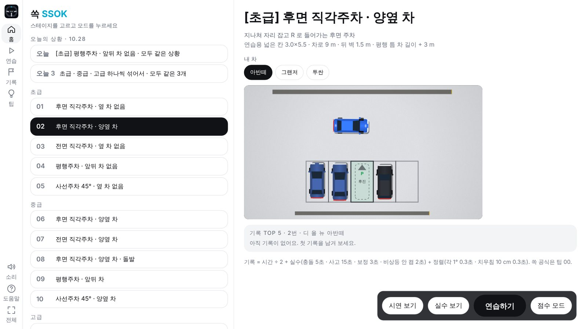
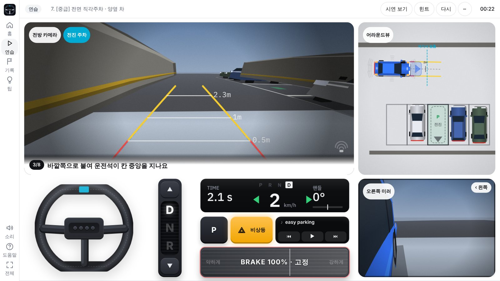
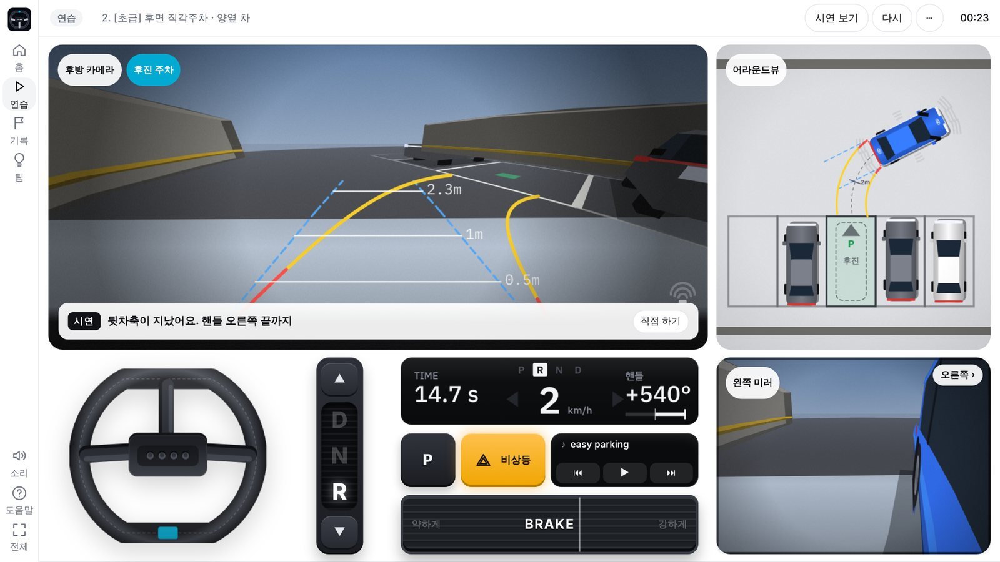
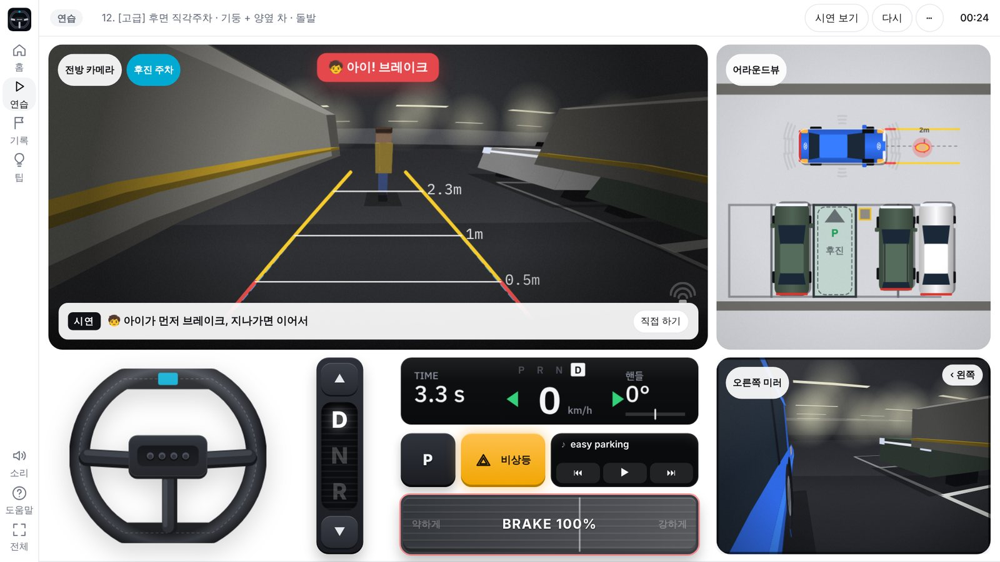
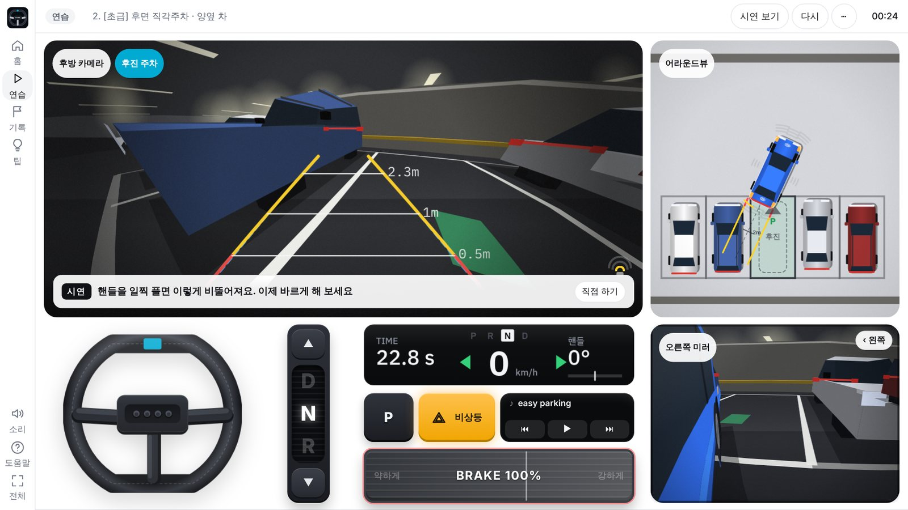
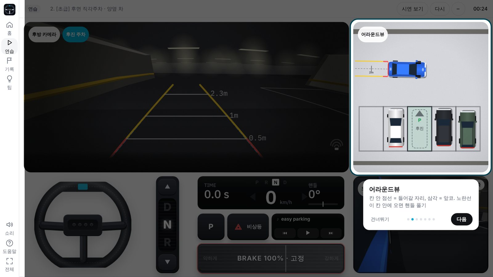
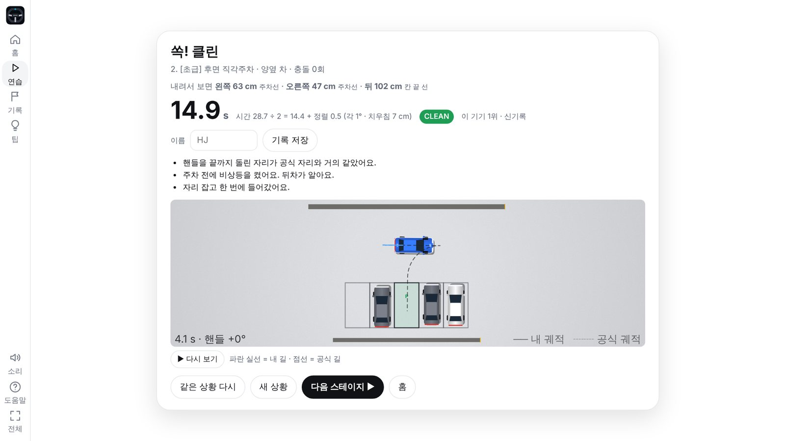
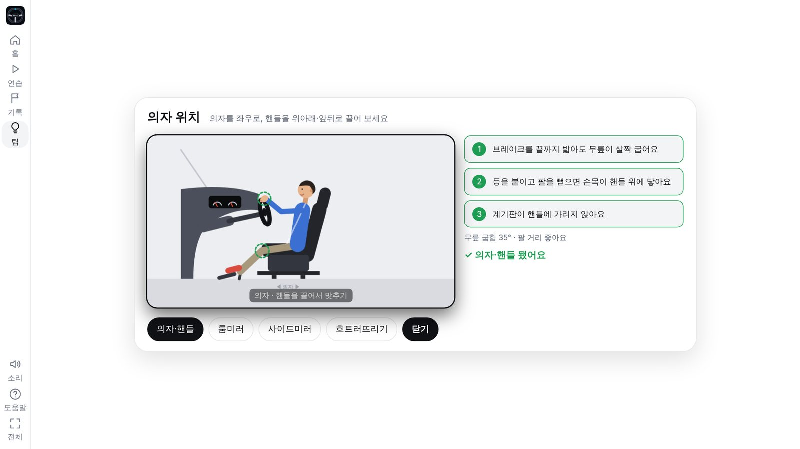

기획서 · 접수양식 02 순서
쏙 SSOK
세워 둔 내 차 안에서, 내 차 핸들로 주차 연습
현대자동차그룹 차량용 앱 개발 공모전 · 일반 부문 · Pleos Connect
01앱 한 줄 소개
세워 둔 내 차 안에서 내 차 핸들을 돌려, 내 차 치수로 그린 가상 차를 주차 칸에 넣어 보는 연습 앱입니다. 후방카메라와 어라운드뷰 화면을 읽는 법을 몸에 익히는 것이 목적이고, 주차 순서는 앱 이름 그대로 S·S·O·K(Signal · Stop · Orbit · Keep) 네 글자입니다.
02기획 배경
계기
- 스물여섯 즈음 면허를 땄고, 그 뒤 10년 가까이 장롱면허였습니다. 2년 전 결혼하고 아이가 태어나 중고차(노란 코나)를 샀습니다.
- 도로 주행은 며칠 만에 익숙해졌지만 주차는 끝까지 안 됐습니다. 지하주차장에서 기둥 옆 칸은 그냥 지나쳤고, 뒤에 차가 서면 식은땀이 났습니다.
- 어느 날 기둥 옆 칸에 후진으로 넣다가 제 차 뒷문을 기둥에 긁어 찌그러뜨렸습니다. 후방카메라를 보고 있었는데도 그랬습니다. 화면에 선이 있다는 것은 알았지만, 그 선이 무슨 뜻인지, 핸들을 언제 풀어야 하는지는 몰랐습니다.

30.2%
물적 사고 중 주차 사고. 그중 후진 53.8%
보험개발원 2017 · 2012~14년 사고
절반↑
기능시험 탈락자 중 직각주차(T자)에서 탈락
시험장 관계자 발언 · 인사이트 보도
56%
후방카메라만 있어도 정지 더미와 충돌
IIHS 2014, n=111
8~12%
후진 시간 중 화면을 보는 비율
NHTSA 2008
15회
4카메라 주차 화면이 손에 익기까지 걸린 시행 수
UMTRI 2004 · n=16
숫자로 본 문제
- 자동차보험 물적 사고 10건 중 3건이 주차 사고이고, 그중 53.8%가 후진 중에 납니다[1].
- 후방카메라가 있어도 실험 참가자의 56%가 뒤에 세워 둔 더미를 들이받았습니다[2]. 후진하는 동안 운전자가 화면을 보는 시간은 전체의 8~12%에 그칩니다[3].
- 4카메라 주차 화면은 열다섯 번쯤 써 봐야 손에 익습니다[4]. 운전면허 기능시험 탈락자의 절반 넘게가 T자 주차에서 떨어집니다[5].
- 미국에서는 후진 중 보행자 사고로 해마다 210명쯤 목숨을 잃고, 그중 31%가 다섯 살 아래 아이입니다[6]. 후방카메라 의무화의 근거가 된 숫자인데, 카메라가 있어도 화면을 보고 멈추지 않으면 소용이 없습니다. 그래서 이 앱에는 사람이 갑자기 나오는 상황을 넣었습니다.
연습할 데가 없다
- 세워 둔 차에서 후방 모니터는 R에 넣어야만 켜지고, 어라운드뷰는 P로 바꾸면 꺼집니다. 정차 중에는 그 화면을 들여다볼 방법이 없습니다.
- 방문 연수는 열 시간에 48~58만 원입니다[7]. 수요는 있어서 불법 방문연수 단속이 2년 만에 180건에서 402건으로 늘었고, 2026년 1월부터 지정 장소 출장 연수가 제도 안으로 들어왔습니다[8].
- 폰 주차 게임은 손가락으로 핸들을 돌리니 몸에 남지 않습니다. 저도 유튜브를 보고 빈 주차장을 찾아다녔지만, 아이를 태우고 그럴 시간은 잘 나지 않았습니다.
| 지금 있는 방법 | 내 차 핸들 | 내 차 치수 | 화면 읽기 훈련 | 비용 · 시간 |
|---|---|---|---|---|
| 방문 연수 | O | O | 강사가 말로 | 10시간 48~58만 원, 예약 필요 |
| 폰 주차 게임 | X (손가락) | X | X | 무료, 언제나 |
| 유튜브 + 빈 주차장 | O | O | X | 무료, 빈 주차장을 찾아야 |
| 자동주차(RSPA) | X (차가 함) | — | X | 옵션, 55%가 안 쓰거나 쓰다 맘[20] |
| 쏙 | O | O | O (순정과 같은 선·소리) | 무료 기본 코스, 세워 둔 차에서 언제나 |
그래서
- 차가 서 있을 때 그 차 핸들로 주차를 연습하게 하자고 정했습니다.
- 플레오스 차에서는 앱이 핸들 각도·깜빡이 레버·브레이크·비상등을 읽을 수 있습니다. 쏙은 그 신호로 화면 속 차를 움직이고, 내 차와 같은 비율의 후방카메라·사이드미러·어라운드뷰를 그립니다.
- 집 앞 주차장에 세운 차 안에서 열 번이고 스무 번이고 해 볼 수 있습니다. 기둥을 긁기 전에 화면 속 선이 무슨 뜻인지 몸으로 알게 하는 것, 이 앱은 그 한 가지를 하려고 만들었습니다.
03주요 기능과 차량 특화 요소
S
Signal
비상등을 켜서 주차할 것임을 주변에 알립니다.
S
Stop
핸들을 돌릴 자리에 멈춥니다.
O
Orbit
천천히 선회합니다.
K
Keep
유지하며 선을 맞춰 정지합니다.

차에서만 되는 이유
- 폰과 태블릿은 내 차 핸들이 몇 도 돌아갔는지, 깜빡이 레버를 어느 쪽으로 올렸는지, 브레이크를 밟고 있는지 모릅니다. 쏙은 Pleos Vehicle SDK로 그 신호를 읽기만 하고 제어는 하지 않습니다. 내 차 핸들이 그대로 연습용 핸들이 됩니다.
- 화면 속 차는 아반떼·그랜저·투싼의 실제 치수입니다. "핸들을 어디서 풀어야 하는지" 같은 감각이 진짜 차로 옮겨갑니다. 실제 카메라 영상은 서드파티 앱에 열리지 않고 P에서는 꺼지기 때문에 화면을 다시 그리는 것이 유일한 길이고, 그래서 어라운드뷰가 없는 트림에도 같은 화면을 줄 수 있습니다.
- 화면의 선과 소리는 현대·기아 순정 규약을 따릅니다. 조향에 따라 휘는 노란선, 핸들을 가운데 두었을 때의 파란 점선, 0.5 m 빨간선, 0.5·1·2.3 m 눈금은 현대 취급설명서의 후방 화면과 같고[9], 어라운드뷰의 차량 중앙 연장선과 2 m 눈금도 같습니다. 주차 거리 경고음은 기아 취급설명서의 3단계(120~60 cm · 60~30 cm · 30 cm 안은 연속음)와 같습니다[10]. 여기서 익힌 선과 소리를 실차에서 그대로 만나게 하려는 것입니다.
쏙 공식 S·S·O·K
- 쏙은 한 번에 깔끔하게 들어가는 소리입니다. 그 소리를 그대로 적은 SSOK 네 글자가 곧 주차 순서입니다. S Signal: 비상등을 켜 주차할 것을 알립니다. S Stop: 핸들을 돌릴 자리에 멈춥니다. O Orbit: 천천히 선회합니다. K Keep: 유지하며 선을 맞춰 정지합니다.
- 멈출 자리는 유형마다 코치가 알려 줍니다. 후면 직각과 평행은 뒷바퀴가 선을 지날 때, 전면과 사선은 칸 입구가 사이드미러 옆에 올 때입니다. 다만 공식을 외우게 하지는 않습니다. 규칙으로 시작해 몸으로 익히되, 자기에게 맞는 방법을 찾도록 둡니다.
- 규칙은 오토 차 그대로입니다. 브레이크를 밟고 있어야 D·R이 들어가고, 떼면 크리핑으로 움직이며, 가속 페달은 없습니다. 끝은 사용자가 정합니다. 멈추고 P를 눌러야 결과가 나오고, 덜 들어간 채 누르면 "아직이에요"와 함께 차가 몇 도 틀어졌는지, 옆으로 얼마나 치우쳤는지 알려 줍니다.
화면 · 진짜 차의 구도

- 플레오스 홈처럼 흰 바탕, 선 아이콘, 둥근 카드입니다. 차가 밤 모드면 화면도 어두워집니다.
- 위 줄은 후방(또는 전방) 카메라와 어라운드뷰, 아래 줄은 운전석 조작부(핸들·기어·계기판·P·비상등·라디오·브레이크 페달)와 사이드미러 하나입니다. 실제로도 거울은 한 번에 한쪽만 보기 때문에 칸 쪽 거울이 먼저 보이고, 한 번 누르면 반대쪽, 끌면 각도, 두 번 누르면 원위치입니다. R을 넣으면 거울이 아래로 내려갑니다.
- 계기판은 핸들 앞 슬림 패널에 시간·깜빡이·속도·P R N D·핸들 각도를 큰 숫자로 보입니다. 기어는 현대 컬럼식과 같은 방향(위로 D · 아래로 R · 끝에 P)이고, 브레이크는 가로로 넓은 페달이라 누른 자리가 강도(왼쪽 살살 · 오른쪽 세게)이며 밟은 비율이 페달 위에 BRAKE 30%처럼 적힙니다.

- 소리는 파일 없이 합성합니다. 시동 때 부릉 한 번 뒤 낮은 엔진 울림, 핸들을 끝까지 돌리면 툭, 주차 거리 경고음, 후진 경고음, 돌발 경보, 충돌음, 완료 차임. 코치 문장은 음성으로도 읽습니다. 화면 글은 짧게, 음성은 문장으로 읽고, 안내 음성이 나오면 음악은 저절로 작아집니다.
연습 구성
- 15 스테이지: 후면 직각·전면 직각·평행·사선 45° × 난이도 셋. 칸 크기는 초급이 연습용 넓은 칸 3.0×5.5 m·차로 9 m, 중급이 요즘 아파트 확장형 2.7×5.3 m·차로 7.5 m, 고급이 법정 최소 일반형 2.5×5.0 m·차로 6 m이고, 좁은 2.3 m 칸은 고급 기둥 칸에만 둡니다[11]. 넓은 데서 익히고 좁은 데로 갑니다.
- 옆 차 없음·양옆 차·기둥으로 갈리고, 고급은 밤이나 비입니다. 시작 자세·옆 차·차종·색·지하/지상/밤/비가 상황 번호로 정해져 같은 번호면 같은 장면이 나오므로 "같은 상황 다시"가 됩니다.
- 오늘의 상황(날짜가 번호라 그날은 모두 같은 자리), 오늘 3개(초·중·고 하나씩 섞은 3연전, 역시 모두 같은 3개), 졸업 코스(초·중·고 하나씩 연속, 합계가 기록), 자유 연습(유형·난이도·옆 차·돌발을 직접 고름).

- 중급부터 보행자·아이·쇼핑카트가 경로를 가로질러 나옵니다. 글로 알리는 것이 아니라 화면 속에 실제로 걸어 나오고, 위에서 본 화면에도 머리와 어깨가 보입니다.
가르치는 방식
- 모드는 넷입니다. [시연 보기]는 같은 상황에서 차가 공식대로 혼자 주차하는 것을 자막과 음성으로 보여 주고, [직접 하기]를 누르면 같은 상황에서 내 차례가 됩니다. [연습하기]는 "비상등을 켜요"처럼 한 단계씩 시키고, 한 것을 확인하면 ✓와 함께 다음 단계로 넘어가며 기록은 남지 않습니다. [점수 모드]는 코치 없이 기록만 남깁니다. [실수 보기]는 후면 직각에서 핸들을 일찍 풀면 어떻게 되는지 시연 운전자가 한 번 보여 주고 "이제 바르게 해 보세요"로 잇습니다.

- 가르치는 방식은 운동학습 연구를 따랐습니다. 매번 피드백을 주면 연습 성적은 좋지만 혼자 할 때 유지와 전이가 떨어지고, 학습자가 요청할 때 주는 피드백이 더 낫다는 결과가 반복해서 나왔습니다[12]. 그래서 초급은 코치 글이 늘 보이지만, 중급·고급은 단계가 바뀔 때 2.5초만 보이고 사라지며 [힌트]를 누르면 3초 다시 보입니다. 스스로 오류를 내 본 훈련이 무오류 학습보다 전이가 좋다는 운전 시뮬레이터 연구[13]가 [실수 보기]의 근거이고, 섞어서 연습하는 쪽이 유지·전이에 유리하다는 연구[14]가 '오늘 3개'의 근거입니다.
- 연습하기에서는 공식 경로를 1.5 m 앞서 가는 반투명 고스트 차가 어라운드뷰에 보입니다. 레이싱 게임의 고스트처럼 "지금 어디로 가야 하나"를 글 없이 보여 줍니다.

- 처음 들어오면 화면 안내가 일곱 단계를 하나씩 비춰 주고, 도움말과 초보 팁(타기 전 준비 · 후방카메라 선 읽기 · 주차 전 순서)은 따로 둡니다.

- 결과는 위에서 본 리플레이에 내 길과 공식 길을 겹쳐 어디서 핸들을 일찍 풀었는지 한눈에 보여 줍니다. "핸들을 돌린 자리가 공식 자리보다 0.6 m 늦었어요", 전후진 보정 횟수, 비상등 여부, 그리고 "내려서 보면" 왼쪽·오른쪽·뒤 간격을 cm로 알려 줍니다.

- 타기 전 준비에서는 옆에서 본 운전석을 끌어 의자 위치와 핸들 높이·거리를 맞추고(무릎 굽힘 · 손목이 림 위 · 계기판이 안 가림), 룸미러는 뒷유리가 한가운데 오게, 사이드미러는 머리를 창에 대고 차체 끝이 겨우 보이게(사각이 가장 작은 BGE 세팅[15]) 맞추면 ✓입니다.
기록 · 안전
- 기록 = 주행 시간 ÷ 2 + 정렬(각 1°당 0.3초 · 치우침 10 cm당 0.3초) + 실수(충돌 5초 · 사람·카트 사고 15초 · 공식보다 많이 왔다 갔다 3초 · 비상등 안 켬 2초). 정확도가 먼저이고 시간은 보조입니다. 시간 기록 위주로 두면 급하게 꺾는 습관이 붙기 때문입니다. 무충돌·사고 0·돌발 전원 멈춤이면 CLEAN. 기록은 스테이지 × 차종별로 기기 안에 남기고, 전국 리더보드는 다음 단계입니다.
- 기어 P일 때만 동작합니다. P를 벗어나거나 차가 움직여 주행 제한 신호(CarUxRestrictions)가 오면 즉시 화면과 소리를 멈춥니다. 한 번에 5분이고, 핸들을 끝까지 돌린 채 오래 버티게 하는 코스는 없습니다(조향 모터 보호).
04주요 사용 시나리오
시나리오 1 · 주차가 무서운 사람(저 같은)
- 장롱면허 10년 뒤 가족이 생겨 중고차를 산 사람입니다. 토요일 오후, 아이를 재우고 아파트 지하주차장에 세워 둔 차에서 앱을 켭니다.
- 홈에서 "8번 · 후면 직각주차 · 양옆 차 · 돌발"을 고르고 [연습하기]를 누릅니다. 카메라·어라운드뷰·칸 쪽 미러가 한 화면에 뜹니다.
- 비상등을 켜고 D로 칸을 지나쳐 멈춘 뒤 R을 넣습니다. 브레이크를 떼면 차가 슬슬 뒤로 가고, 핸들을 돌리면 노란선이 휩니다. 코치가 말합니다. "노란선이 칸 안에 오면 핸들을 풀어요."
- 빨간선이 옆 차에 닿으면 경고음이 울립니다. 브레이크로 세우고 D로 뺀 뒤 다시 넣습니다. 후진 중에 사람이 걸어 나오면 밟아서 세웁니다. 다 됐으면 멈추고 P를 누릅니다.
- 결과 화면에 내 길과 공식 길이 겹쳐 나옵니다. "핸들을 돌린 자리가 공식 자리보다 0.6 m 늦었어요." 그때 기둥을 긁은 이유가 그 한 장에 있습니다. 내려서 보면 왼쪽 40 cm, 오른쪽 31 cm.
- 일주일 뒤 같은 주차장에서 진짜 후방카메라를 보니 같은 선이 보입니다.
시나리오 2 · 차를 바꾼 사람
- 아반떼에서 그랜저로 바꿨습니다. 차가 30 cm 길어지고 회전반경도 커졌습니다.
- 홈에서 차종을 그랜저로 바꾸면 화면 속 차와 안내선이 그랜저 치수로 바뀝니다. 예전처럼 핸들을 풀었더니 이제는 늦다는 것을 리플레이가 보여 줍니다.
시나리오 3 · 카셰어링
- 처음 타는 쏘카 차에 앉아 출발 전 1분, 그 차 치수로 한 번 넣어 보고 나갑니다.
시나리오 4 · 매일 1분
- 오늘의 상황과 오늘 3개는 날짜가 번호라 그날은 누구나 같은 자리에서 합니다. 출근 전 한 번, 퇴근 후 한 번. 짧게 자주 하는 쪽이 하루에 몰아서 하는 것보다 낫다는 시뮬레이터 훈련 연구[16]를 따랐습니다.
05개발 계획 · SDK/API
읽는 신호 다섯 가지 — 전부 읽기, 제어 없음
| 신호 | Pleos Connect SDK / AAOS | 권한 | 용도 |
|---|---|---|---|
| 조향각 | SteeringWheel.registerSteeringWheelAngle | CAR_DRIVE | 가상 차 조향(핸들 ±540° = 바퀴 ±35°) |
| 방향지시등 | TurnSignal.registerTurnSignalState | CAR_LIGHTS | 가상 기어: 레버 위 D · 아래 R · 가운데 N(컬럼 변속기와 같은 방향) |
| 브레이크 | Brake.registerBrakePedalStatus | CAR_DRIVE | 밟은 채 시작 · 떼면 크리핑 · 밟으면 정지 |
| 기어 | AAOS GEAR_SELECTION (+ Pleos Gear) | CAR_POWERTRAIN | P 감시. P를 벗어나면 바로 멈춤 |
| 비상등 | AAOS HAZARD_LIGHTS_STATE | CAR_EXTERIOR_LIGHTS | 주차 전 비상등 습관. SDK TurnSignal은 OFF/LEFT/RIGHT뿐이라 AAOS 표준 속성으로 |
| 주행 제한 | CarUxRestrictionsManager | — | 주행 중이면 화면·소리 즉시 차단 |
| 음성 | TextToSpeech | — | 코치 문장 읽기. 카메라 영상·위치 정보는 쓰지 않음 |
차 모델과 화면 수식
- 가상 차는 저속 자전거 모델입니다. 핸들 각 ÷ 조향비 = 바퀴 각, 휠베이스 ÷ tan δ = 회전반경. 차종 프리셋은 아반떼·그랜저·투싼의 실제 치수입니다.
- 카메라와 미러는 핀홀 투영에 어안 왜곡을 더해 그립니다. 안내선 간격은 현대 취급설명서의 0.5·1·2.3 m입니다.
- 브라우저 시안과 앱이 같은 수식을 씁니다. 한쪽을 고치면 다른 쪽도 고치고, 15 스테이지 × 차종 3이 공식대로 조작했을 때 부딪히지 않고 들어가는지를 Kotlin 테스트와 브라우저 검사가 같은 기준값으로 확인합니다.
지금 상태 (2026-10-28)
- Vehicle SDK 2.3.2로 release APK를 빌드하고 Pleos Connect 에뮬레이터 2.1.0(API 34 Automotive)에 설치해 돌렸습니다. Virtual Console로 조향각·깜빡이·브레이크·기어 읽기를 확인했고, 조향각은 부호가 반대로 와서 앱에서 뒤집었습니다. 비상등 속성은 에뮬레이터가 주지 않아 화면 버튼으로 대신하며, 실차에서 확인할 항목으로 남겨 두었습니다.
- 자동 검사: 단위 테스트 35개(기하·스테이지 기준값·시나리오 완주), 실행 테스트(Robolectric), 낮·밤 화면 스냅샷(Paparazzi), 브라우저 전 화면 검수(세 해상도 + 세로), 글자 수·글자 크기 린트. 고칠 때마다 다시 돌립니다.
정책 · 안전
- 쏙은 게임이 아니라 정차 중 교육·연습 앱입니다. 주의 분산 최적화(DO) 미선언, 기어 P 가드와 주행 제한 신호에 즉시 차단, 상태 복원, 주행 중 UI 없음으로 Pleos 운전 안전 가이드와 Google 차량용 앱 품질 기준을 따릅니다[17].
- 오디오는 AAOS 포커스 규칙대로 음성은 USAGE_ASSISTANT + 잠깐 끼어들기(음악이 작아짐), 음악은 USAGE_MEDIA + GAIN(통화 중엔 틀지 않음, 뺏기면 멈췄다 돌아오면 이어서)이고, 내비게이션 채널은 쓰지 않습니다[18].
- 한 번에 5분. 핸들을 끝까지 돌린 채 버티게 하는 코스는 없습니다. 보조 글자 대비 4.5:1 이상, 핵심 정보 글자 16 이상, 터치 영역 40 dp 이상으로 맞췄습니다.
일정
| 때 | 할 일 |
|---|---|
| 접수(11.15)까지 | 기능 동결. 에뮬레이터 실측에서 나온 버그만 고침. 기획서·캡처·시연 영상 정리 |
| 11월 | 실제 플레오스 차에서 조향각 부호·주기, 비상등 속성, 주행 제한 신호 실측. 2차 발표 장표 |
| 12월 초 2차 발표 전 | 동작하는 APK·시연 영상·README 마무리. 전시 대비 구동 안정화 |
| 이후 | 차종 프리셋 확대(플레오스 탑재 차·기아), VIN 디코딩 자동 선택, 전국 리더보드 |
다음
- 다음 버전은 차선 변경입니다. 깜빡이 → 사이드미러 확인 → 핸들 살짝 → 복귀. 주차와 같은 신호(깜빡이·조향각·브레이크)로 되고, 초보가 주차 다음으로 무서워하는 것이 차선 변경입니다.
- 제어 SDK가 열리면 실제 미러 하향과 시트 위치를 코스에 연결하고, Gleo에 "주차 연습 켜 줘"를 등록합니다.
- 운전연수 업체와 쏘카 온보딩 B2B.
06기대효과 · 발전 가능성
타깃을 한 줄로 쓰면 주차가 무서운 사람 전부입니다. 초보만이 아닙니다.
| 누구 | 규모 · 근거 |
|---|---|
| 초보(신차·중고차) | 해마다 88만 명이 새로 면허를 따고, 첫차의 64%가 중고차, 그 이유 1위가 운전 미숙(53%)[21] |
| 장롱면허 복귀 | 면허 소지자의 64%가 장롱면허[22]. 연수 10시간 48~58만 원, 2026년 1월부터 출장 연수 제도화[7][8] |
| 차를 바꾼 사람 | 해마다 신차 170만 대, 중고차 226만 대[23]. 차가 바뀌면 치수와 회전반경이 바뀝니다 |
| 카셰어링·렌터카 | 쏘카 회원 1,000만 명, 사고의 91%가 차대차[24]. 쏘카는 Pleos 25에서 첫 양산차부터 서비스를 함께 연다고 발표 |
| 시니어 | 65세 이상 면허 563만 명. 페달 오조작 사고 567건 중 70%가 60대 이상[25] |
MAU — 범위로
| 항목 | 2026년 말 | 2027년 말 | 근거 |
|---|---|---|---|
| 플레오스 커넥트 탑재 차 | 8~9만 대 | 25만 대 전후 | 더 뉴 그랜저 2026년 5월 출시, 9월 국내 8,898대. 디 올 뉴 아반떼 하반기(7세대 월 7,305대)[26] |
| 설치율 | 10~30% | 10~30% | 앱 마켓 통계가 공개된 것이 없어 점이 아니라 범위 |
| 월 활성 | 30~50% | 30~50% | 졸업하면 떠나는 앱이라 보수적으로 |
| MAU | 0.3~1.3만 | 1~4만 | 설치 기반 × 설치율 × 월 활성 |
Retention — 졸업하는 앱
- 잔존율 대신 코스 졸업률과 다시 돌아오는 계기(차 교체, 가족 프로필, 100일 복습, 오늘의 상황·오늘 3개)로 정의합니다.
- 순위 경쟁은 느린 학습자를 위축시키고 단순 포인트는 효과가 없다는 메타분석[19]을 따라, 1차는 내 지난 기록과 비교하고 배지는 실력 기준(졸업 코스 CLEAN)에만 둡니다. 전국 리더보드는 그 다음입니다.
수익
- 기본 코스 무료, 고급 코스 유료. 연수 한 시간 5~6만 원이 가격의 기준점입니다.
- B2B: 운전연수 업체, 쏘카 온보딩. 보험 연계: 주차 사고가 물적 사고 보험금의 25.7%[1].
현대차그룹에 주는 가치
- 자동주차 기능을 써 본 적 없거나(47%) 쓰다 만(8%) 사람이 55%이고, 그중 28%는 "사용법을 몰라서"입니다[20]. 쏙의 선과 소리는 순정 화면·경고음과 같아서, 이 앱이 후방 화면과 자동주차 기능의 온보딩이자 전시장 체험 콘텐츠가 됩니다.
- 쏘카 연계: 처음 타는 차에서 출발 전 1분 연습. 차대차 사고 비율이 높은 카셰어링 쪽에 바로 쓸 수 있습니다.
- 2030년 플레오스 2천만 대. 같은 앱이 그대로 늘어납니다.
07참고자료
소개 페이지 ssok.hojun.app / 브라우저 시안(앱과 같은 수식, 가로 화면) ssok.hojun.app/preview / 기획서 전문 ssok.hojun.app/plan / 화면 캡처 8장 첨부(홈 · 연습하기 · 사이드미러 반대쪽 · 결과 · 밤 돌발 · 타기 전 준비 · 화면 안내 · 실수 보기) / 시연 영상 · GitHub 저장소(소스 · apk/ · README)는 링크로 별도 기재. 2번의 사진은 기획 계기가 된 제 차(코나)이고 가족 얼굴은 가렸습니다.
출처
- 보험개발원, 자동차보험 주차 사고 통계(2017 발표, 2012~2014년 사고).
- IIHS Status Report Vol. 49 No. 2 (2014), 후방카메라·센서 실험(참가자 111명).
- NHTSA, DOT HS 811 024 (2008), 후진 시 화면 주시 비율.
- UMTRI-2004-17, 4-camera parking display study(참가자 16명).
- 도로교통공단 시험장 관계자 발언, 매일신문 2011-06-11. 2016년 개편 뒤 합격률 54%(디지털타임스).
- NHTSA, FMVSS 111 final rule (2014), backover 통계.
- 운전연수 비용 안내(2025): 10시간 48~55만 원, 시간당 5~6만 원. glasswallet.com/blog/driving-lessons-cost-guide
- 세계일보 2025-09(불법 방문연수 단속 180→402건), 다음 뉴스 2026(2026-01-02부터 지정 장소 출장 연수 허용).
- 현대자동차 취급설명서 GEN5 AVNT — 후방 화면 안내선 색·눈금. ownersmanual.hyundai.com/ivi/STD_GEN5/AVNT/KOR
- 기아 KA4 2026 취급설명서 — 주차 거리 경고 3단계. ownersmanual.kia.com/full_webhelp/KA4/2026/ko_KR/topics/chapter1_5_17.html
- 주차장법 시행규칙 제3조(주차 단위 구획: 일반형 2.5×5.0 m, 확장형 2.6×5.2 m), 서울시 신축 확장형 비율 조례.
- Winstein, Pohl & Lewthwaite (1994), 안내 가설; 자기 조절 피드백 리뷰 PMC3487418; 피드백 빈도 메타분석(2022).
- Ivancic & Hesketh (2000), Learning from errors in a driving simulation, Ergonomics 43(12). doi 10.1080/00140130050201427
- 맥락 간섭 메타분석(2024, PubMed 39205981); Frontiers in Psychology 15:1377122 (2024).
- Platzer (1995), SAE 950601 — BGE 사이드미러 세팅.
- VR 시뮬레이터 훈련 간격 효과 체계적 리뷰(2023, PMC10009969).
- Pleos 운전 안전 가이드·앱 카테고리·주행 제한 개발 가이드(document.pleos.ai); Google 차량용 앱 품질 가이드라인 DD-2(developer.android.com/docs/quality-guidelines/car-app-quality).
- AAOS 오디오 포커스(source.android.com/docs/automotive/audio/audio-focus).
- Sailer & Homner (2020), The Gamification of Learning: a Meta-analysis, Educational Psychology Review 32.
- J.D. Power, 주차 보조(자동주차) 기능 사용 경험 조사.
- 오토벨 설문(1,148명) · 경찰청 운전면허 통계(신규 면허 연 88만 명).
- 현대해상 교통기후환경연구소(면허 소지자 64% 장롱면허), 뉴데일리 2025-03-24.
- 한국자동차모빌리티산업협회 신차 등록 · 국토교통부 중고차 이전 등록 통계(2024).
- 쏘카 공시·보도 자료(회원 1,000만 명, 사고 유형).
- 경찰청 고령 운전자 면허 통계 · 한국교통안전공단 페달 오조작 사고 분석.
- 현대자동차 월간 판매 실적(2026-09) · Pleos 25 발표(2025-03).
08숏폼
선택. 시연 영상과 같은 소재로 30~60초 세로 영상. "핸들을 돌리면 화면 속 차가 쏙" 한 장면.
부록예상 질문과 답
- 서 있는 차에서 핸들을 돌리면 타이어·조향계가 상하지 않나?
- 현대 EPS는 가득 돌려 잡고 있으면 과부하 보호에 들어갑니다. 그래서 한 세션 5분, 가득 유지를 요구하는 코스 없음, 가상 차가 움직일 때만 돌리도록 안내, 시작 시 주의 문구를 둡니다. 시동 ON·P·주차 브레이크 상태에서만 씁니다.
- 연습하면 실제로 주차를 잘하게 되나?
- 시뮬레이터 연습의 전이 연구는 결과가 엇갈립니다. 이 앱은 '실력 증명'이 아니라 '내 차 핸들 감각'과 '카메라 화면 읽기'를 익히는 도구입니다. 화면 읽기 훈련이 필요하다는 점은 NHTSA·IIHS·UMTRI 연구가 뒷받침하고, 가르치는 방식(요청형 피드백·오류 훈련·섞어 연습)은 운동학습 연구를 따랐습니다.
- 실제 카메라 영상을 쓰면 더 좋지 않나?
- 서드파티 앱에는 카메라 영상이 열리지 않고(AAOS EVS는 시스템 전용), 후방 모니터는 R에서만 켜지고 어라운드뷰는 P에서 꺼집니다. 화면을 다시 그리는 것이 유일한 길이고, 어라운드뷰 없는 트림(아반떼 대부분)에도 같은 화면을 줄 수 있습니다.
- 연습 앱인데 사업성은?
- 세그먼트 합산(초보·장롱면허·차 교체·카셰어링·시니어), 보험 주차사고 손해, 주차 보조 옵션 사용률과 업셀, 연수·쏘카 B2B. 숫자는 6번 표에 있습니다.
- 전면 주차 스테이지는 왜 차로를 6.5 m 이상으로 두나?
- 앞바퀴가 조향하는 차는 전진으로 들어갈 때 앞 바깥 모서리가 크게 돌아 옆 차를 쓸고 지나갑니다. 운동학 모델로 확인하면 6 m 차로에서는 옆 차가 양쪽에 있을 때 한 번에도, 한 번 빼서도 들어가는 조합이 없습니다(그랜저 기준). 6.5 m에서 '지나쳐서 35° 꺾고 2 m 빼기'가 세 차종 모두 통합니다. 그래서 옆 차가 있는 전면 스테이지는 차로를 6.5 m 이상으로 두고 코칭에 보정을 넣었습니다.
- 차종은 어떻게 아나?
- CarInfo는 VIN·CRN만 주고 외부 치수를 주지 않아 프리셋(아반떼·그랜저·투싼)에서 고릅니다. VIN 디코딩으로 자동 선택은 2차입니다.
- Pleos 정책에 맞나?
- 쏙은 게임이 아니라 정차 중 교육·연습 앱입니다(Pleos 운전 안전 가이드는 주행 중 주의를 끄는 활동을 막습니다). DO 미선언, 기어 P 가드와 주행 제한(CarUxRestrictions) 신호에 즉시 화면·소리 차단, 상태 복원, 주행 중 UI 없음. 오디오는 음성 MAY_DUCK · 음악 GAIN(내비 채널 안 씀). 등록 카테고리는 라이프스타일/교육입니다.